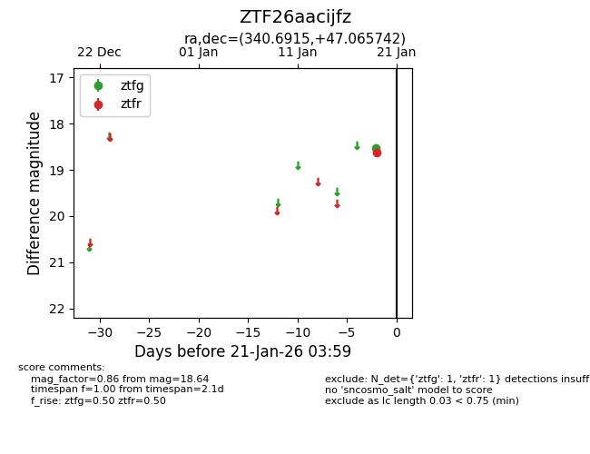
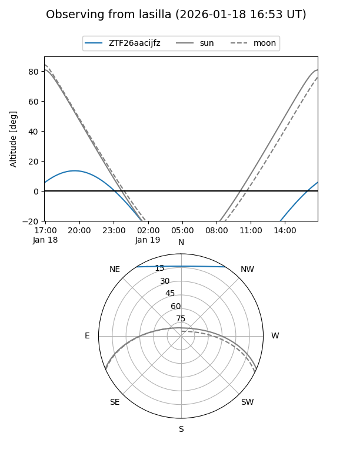

ZTF26aacijfz
Target ZTF26aacijfz at 2026-01-19 03:55
Aliases and brokers:
FINK: link
Lasair: link
ALeRCE: link
alt names
ZTF26aacijfz (ztf,fink_ztf)
Coordinates:
equatorial (ra, dec) = 340.6915,+47.06574
equatorial (HMS+DMS) = 22:42:45.95,+47:03:56.67
galactic (l, b) = (101.3010,-10.33016)
Flags:
Photometry:
last ztfr=18.64
1 ztfr detections
Lightcurve

Visibility


Additional plots